Projekte und Dokumente
LemmaLoom bewahrt Ihre gesamte Arbeit in Projekten auf. Ein Projekt enthält Ihre Dokumente und die Codes, Kodierungen, Memos und Verknüpfungen, die Sie ihnen hinzufügen. Auch die Sets, Gruppen, Attribute, Wörterbücher und gesicherten Abfragen, mit denen Sie die Dokumente ordnen und analysieren, liegen dort. In der Regel ist es sinnvoll, das gesamte relevante Material einer Studie in einem einzigen Projekt zu halten. Die meisten Ansichten von LemmaLoom betrachten jeweils nur ein Projekt.
Alle Beispiele in diesem Kapitel stammen aus dem Beispielprojekt „Klimadebatte“. „Klimadebatte“ enthält elf erfundene Texte, die sich mit dem Klimawandel befassen. Es sind Meinungsbeiträge, Kolumnen, Blogbeiträge und eine Rede; sechs davon haben Aktivisten geschrieben (etwa „Uns läuft die Zeit davon“), fünf stammen von Skeptikern (etwa „Die Modelle liegen daneben“). Außerdem enthält „Klimadebatte“ drei weitere Dokumente. „Hitzebericht 2024“ ist eine PDF-Datei, „Streit um die CO2-Steuer“ ist ein importierter Nachrichtenartikel aus dem Web, und „Radiodebatte“ ist eine aufgezeichnete und transkribierte Radiodebatte. Schließlich ist „Uns läuft die Zeit davon (Englisch)“ eine Übersetzung von „Uns läuft die Zeit davon“. Insgesamt sind es also 15 Dokumente. Sie können das Projekt auch direkt in LemmaLoom erkunden. Fügen Sie es dazu mit Ablage ▸ Importieren ▸ Beispielprojekt als neues Projekt in der Sprache der Benutzeroberfläche hinzu. LemmaLoom importiert dann das Projekt „Klimadebatte“ und macht es zum aktiven Projekt.
Wichtige Begriffe
Alle Codes, Sets, Gruppen, Attribute und Wörterbücher, die Sie anlegen, gehören ausschließlich zu ihrem jeweiligen Projekt. Tags und eigene Analysatoren gehören zu all Ihren Projekten, ebenso Abfragen, die für Alle Projekte gesichert sind. Innerhalb eines Projekts steht ein Dokument für ein Stück Material. Das können reine Textdateien, PDF-Dokumente, Webseiten sowie Transkripte von Audio- und Videoaufnahmen sein. Wenn Sie ein Dokument übersetzen, entsteht ein weiteres Dokument, eine Übersetzung (Kapitel 9, Übersetzungen und geteilte Ansicht); sie steht unter ihrem Original und trägt alle Tags, die dem Original zugewiesen sind.
Gruppen funktionieren in der Seitenleiste ähnlich wie Ordner; jedes Dokument liegt in höchstens einer Gruppe (oder in keiner). Gruppen dienen vor allem dazu, die Dokumentliste geordnet zu halten. Die Code-Matrix kann ihre Spalten sogar nach Gruppen zusammenfassen. Auch intelligente Sets und Abfragen können Dokumente nach ihrer Gruppe auswählen. Sets sind Sammlungen von Dokumenten, mit denen Sie bestimmte Dokumente analysieren oder mehrere Dokumentsammlungen miteinander vergleichen. Ein Dokument kann in beliebig vielen Sets enthalten sein. Ein intelligentes Set enthält die Dokumente, die bestimmte Bedingungen erfüllen (zum Beispiel „Reichweite“ größer oder gleich 100.000). Ein intelligentes Set hält seinen Inhalt anhand dieser Bedingungen selbst aktuell.
Tags (etwa „Meinungsbeitrag“ oder „viral“) sind Bezeichnungen, die Sie selbst anlegen. Ein Tag kann so gut wie alles darstellen, was für Ihre Forschung von Bedeutung ist. Eine gemeinsame Liste von Tags gilt für Projekte, Dokumente, Codes, Memos und Verknüpfungen. Attribute sind Eigenschaften jedes einzelnen Dokuments (etwa seine „Haltung“ oder sein „Erscheinungsdatum“). Ein Attribut, das Sie einmal angelegt haben, gilt für das gesamte Projekt.
Ihr Projektregal im oberen Teil der Seitenleiste zeigt zehn Ansichten, von Codebuch als erster bis Abfragen als letzter. Dieselben Ansichten öffnen sich auch für jedes Set und jedes Tag und erfassen dann nur dessen Dokumente. Der Geltungsbereich sind die Dokumente, mit denen eine Ansicht arbeitet. Ein Geltungsbereich kann ein ganzes Projekt, ein Set oder die Dokumente mit einem bestimmten Tag sein.
Einige dieser Begriffe überschneiden sich, und es lohnt sich, vor der eigentlichen Analyse zu wissen, welcher in welcher Situation besser passt. Wenn Sie Dokumente nach einer Angabe vergleichen möchten (etwa Haltung oder Datum), legen Sie diese als Attribut an. Sets eignen sich, um bestimmte Dokumente zu analysieren (also Ihren Geltungsbereich einzuschränken). Intelligente Sets sind praktisch, wenn ein Attribut oder ein Tag diese Dokumente für Sie auswählen kann. Gruppen ordnen nur die Liste. Bezeichnungen, die in jedem Projekt dasselbe bedeuten sollen, gehören in Tags.
In „Klimadebatte“ ist „Haltung“ als Attribut angelegt. Deshalb können Code-Statistik und Code-Matrix ihre Ergebnisse nach Haltung aufschlüsseln. Für die Schlüsselwortliste, die Sets vergleicht, enthält das Projekt zusätzlich die beiden Sets „Aktivisten“ und „Skeptiker“. „Print“ und „Online“ sind Gruppen, die nur die Liste ordnen. Das Tag „Meinungsbeitrag“ kennzeichnet eine bestimmte Art von Text.
Die Seitenleiste
Die Seitenleiste befindet sich links im Hauptfenster. Auf die Liste Ihrer Projekte folgt alles, was Ihr aktives Projekt enthält. Ein Klick auf die Schaltfläche für die Seitenleiste am linken Rand der Symbolleiste blendet die Seitenleiste ein oder aus. Darstellung ▸ Seitenleiste ein-/ausblenden (⌃⌘S) bewirkt dasselbe.
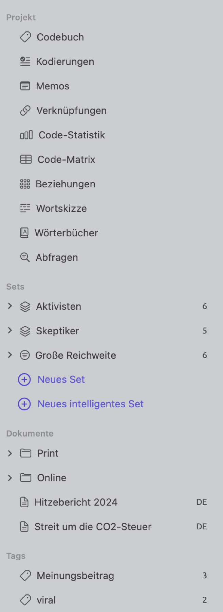
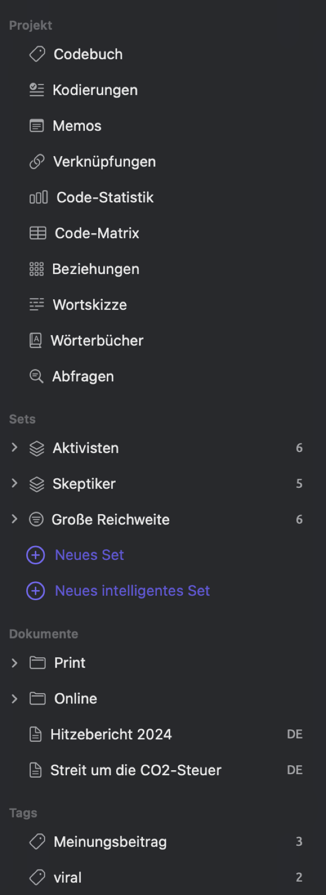
Von oben nach unten hat die Seitenleiste diese Abschnitte:
| Abschnitt | Inhalt |
|---|---|
| Favoriten | Projekte, die Sie mit einem Stern versehen haben. Der Abschnitt erscheint, sobald mindestens ein Projekt ein Favorit ist. |
| Projekte | Alle Ihre Projekte in alphabetischer Reihenfolge. Der Name des aktiven Projekts ist fett gesetzt. |
| Projekt | Das Projektregal des aktiven Projekts (siehe Das Projektregal weiter unten in diesem Kapitel). |
| Sets | Die Sets und intelligenten Sets des aktiven Projekts, jeweils mit der Zahl ihrer Dokumente, gefolgt von Neues Set und Neues intelligentes Set. |
| Dokumente | Die Gruppen des aktiven Projekts, danach die Dokumente, die in keiner Gruppe sind. Übersetzungen stehen unter ihren Originalen. |
| Tags | Jedes Tag, das an einem Dokument im aktiven Projekt vergeben ist, mit der Zahl der Dokumente, die es tragen. Der Abschnitt erscheint, sobald mindestens ein Dokument ein Tag hat. |
Ganz oben, über allem anderen, liegt das Feld Dokumente durchsuchen. Was Sie dort eingeben, beschränkt die Seitenleiste auf die Dokumente des aktiven Projekts, deren Name den eingegebenen Text enthält. Der Zeilenschalter öffnet das erste Ergebnis. Mit dem Abwärtspfeil wechseln Sie in die Liste. Die Esc-Taste löscht Ihre Eingabe und zeigt wieder die ganze Seitenleiste. Mit Bearbeiten ▸ Dokument suchen (⇧⌘F) holen Sie eine ausgeblendete Seitenleiste zurück und setzen die Einfügemarke direkt in das Suchfeld.
Jede Zeile beginnt mit einem Symbol für die Art des Dokuments. Audio erkennen Sie an einer Wellenform, Video an einem Filmstreifen. Text-, PDF- und Webdokumente erhalten ein Seitensymbol. Dokumente ohne Quelldatei (etwa ein Text, der aus einem REFI-QDA-Projekt importiert wurde) zeigen ein Quadrat mit einem Stift. Eine Farbe, die Sie einem Dokument gegeben haben, färbt auch sein Symbol. Die Zeile endet mit einem Sprachkürzel aus zwei Buchstaben wie EN, DE oder ZH (FR für einen französischen Text); bewegen Sie den Mauszeiger auf das Kürzel, um den vollen Namen der Sprache zu sehen. Neben dem Kürzel zeigt ein Kennzeichen, wie weit die Indizierung fortgeschritten ist. Kapitel 21, Analyse und Indizierung behandelt die Indizierung.
| Kennzeichen | Bedeutung |
|---|---|
| Keines | Das Dokument ist indiziert und für jede Analyse bereit. |
| Fortschrittsring | Das Dokument wird indiziert, oder ein Analysator verarbeitet es gerade. Bewegen Sie den Mauszeiger auf den Ring, um den Arbeitsschritt und den erledigten Anteil in Prozent zu sehen. |
| Gepunkteter Kreis | Wartet auf Indizierung. Das Dokument steht in der Warteschlange, und die Indizierung beginnt von selbst. |
| Kreis mit Pausenzeichen | Indizierung ist aus. Das Dokument wurde ohne Indizierung importiert. Jetzt indizieren in den Dokumenteigenschaften startet sie (siehe Indizierung weiter unten in diesem Kapitel). |
| Kreis mit Fragezeichen | Sprache wird für die Indizierung nicht unterstützt. Sie können das Dokument lesen und kodieren, aber Lenses, der Tab Grammatik und Wortskizzen setzen Englisch, Deutsch oder Chinesisch voraus. |
| Rotes Warndreieck | Die Indizierung ist fehlgeschlagen. Bewegen Sie den Mauszeiger auf das Dreieck, um den Grund zu lesen. Für einen neuen Versuch klicken Sie mit der rechten Maustaste auf das Dokument und wählen Indizierung wiederholen. |


Während der Indizierung zeigt die Seitenleiste Namen und Symbol des Dokuments in Grau. Sie können das Dokument in dieser Phase bereits aufrufen, öffnen, lesen und kodieren. Das Lens-Menü wird zusammen mit dem Tab Grammatik im Inspektor verfügbar, sobald die Indizierung abgeschlossen ist.
Wenn Sie eine Audio-, Video- oder PDF-Datei importieren, erscheint dafür zunächst eine Zeile am Ende des Abschnitts Dokumente. In dieser Zeile steht eine Fortschrittsanzeige, bis die Datei als Dokument bereit ist. Beim Übersetzen erscheint eine ähnliche Zeile unter dem Original, die die Zielsprache und einen Fortschrittsring zeigt.
Projekte
Ein Projekt anlegen
„Klimadebatte“ ist ein Projekt für eine einzige Studie. Es hat vier Attribute, die für seine Dokumente angelegt sind. Das Attribut „Haltung“ verwendet den Typ Auswahl. Seine Werte stammen aus der festen Liste „Aktivismus“, „Skepsis“ und „Neutral“, was sie einheitlich hält. Den Wert „Neutral“ haben der Bericht, der Nachrichtenartikel und die Radiodebatte. Das Attribut „Reichweite“ speichert ganze Zahlen, „Erscheinungsdatum“ speichert Daten. „Medium“ enthält Text, da sich seine Werte nicht im Voraus aufzählen lassen. Wie die Abbildung zeigt, sind im Dialog nur die ersten beiden dieser Attribute angelegt.
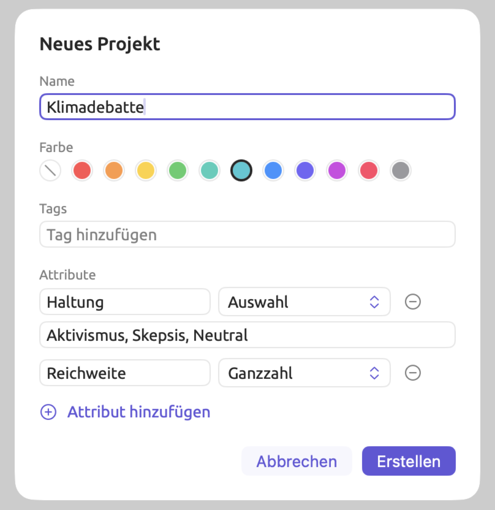
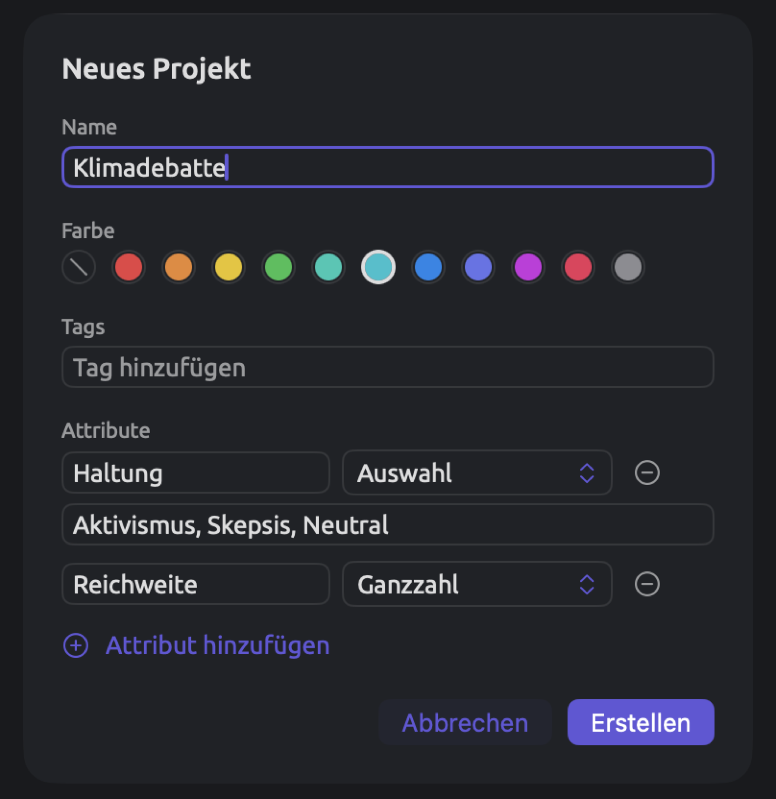
So legen Sie ein Projekt an:
- Wählen Sie Ablage ▸ Neues Projekt (⇧⌘N).
- Geben Sie unter Name einen Namen für das Projekt ein. Bleibt das Feld leer, heißt das Projekt Neues Projekt.
- Um dem Projekt eine Farbe zu geben, klicken Sie auf eines der Farbfelder neben Farbe. Zu Beginn ist das erste Feld, Keine Farbe, ausgewählt.
- Um das Projekt mit einem Tag zu versehen, geben Sie das Tag unter Tags ein und drücken den Zeilenschalter. Auch ein Komma schließt ein Tag ab.
- Um gleich Attribute anzulegen, klicken Sie unter Attribute für jedes Attribut einmal auf Attribut hinzufügen. Geben Sie seinen Namen ein und wählen Sie seinen Typ. Bei einer Auswahl geben Sie außerdem in den Zeilen darunter die Wahlmöglichkeiten ein, eine pro Zeile.
- Klicken Sie auf Erstellen oder drücken Sie den Zeilenschalter.
Sobald Sie das Projekt angelegt haben, macht LemmaLoom es zum aktiven Projekt. Kapitel 4, Material importieren erklärt, wie Sie Ihr Projekt mit Dokumenten füllen.
Es gibt sechs Attributtypen. Text speichert Text, Datum speichert Daten, Ganzzahl speichert ganze Zahlen, Dezimalzahl speichert Zahlen mit Nachkommastellen, Boolescher Wert kennt nur Ja und Nein und verwendet Markierungsfelder, und Auswahl speichert einen Eintrag aus einer festen Liste. Attributtypen in Kapitel 8, Sets, Gruppen, Tags und Attribute zeigt, wie Sie den passenden Attributtyp für den vorgesehenen Zweck wählen. Während Sie den Namen eines Attributs eingeben, schlägt die automatische Vervollständigung vorhandene Attribute aus Ihren Projekten vor. Stimmt der Name mit einem davon überein, werden sein Typ und seine Wahlmöglichkeiten automatisch übernommen. Neue Attribute können Sie auch später hinzufügen, und zwar in den Projekteigenschaften, in den Eigenschaften eines Dokuments oder direkt im Attribute-Fenster (Projekt ▸ Attribute). Kapitel 8, Sets, Gruppen, Tags und Attribute beschreibt, wie Dokumente zu ihren Werten kommen.
Ein exportiertes LemmaLoom-Projekt kann als Sicherung dienen oder an Kolleginnen und Kollegen weitergegeben werden. Um es zu laden, wählen Sie Ablage ▸ Importieren ▸ LemmaLoom-Archiv. Sie können auch über Ablage ▸ Importieren ▸ REFI-QDA-Projekt importieren; damit laden Sie ein Projekt aus einem anderen Programm, das den REFI-QDA-Standard unterstützt. Ebenso können Sie eine .llz- oder .qdpx-Datei im Finder mit LemmaLoom öffnen, um sie auf dieselbe Weise zu importieren. Einzelheiten zu beiden Formaten finden Sie in Kapitel 22, Austausch und Export.
Zwischen Projekten wechseln
Ein Klick auf den Namen eines Projekts unter Projekte oder Favoriten macht es zum aktiven Projekt. Danach füllen sein Regal, seine Sets, Dokumente und Tags den Rest der Seitenleiste.
Sie kehren genau dorthin zurück, beginnend mit dem Projekt, das Sie vor dem Beenden von LemmaLoom zuletzt verwendet haben. Jedes Projekt hat seine eigenen Tabs, die alle wiederhergestellt werden, wenn Sie zu diesem Projekt zurückkehren, samt dem Tab, der zuletzt aktiv war. Außerdem stellt jedes geöffnete Dokument in diesem Projekt seine aktivierten Lenses und seine Scrollposition wieder her. Ein anderes Dokument, das daneben in der geteilten Ansicht geöffnet war, kehrt ebenfalls zurück. Dasselbe gilt für den Zustand des Inspektors.
Favoriten
Projekte lassen sich zusätzlich oben in der Seitenleiste aufführen. Bewegen Sie dazu den Mauszeiger unter Projekte auf den Eintrag des Projekts und klicken Sie auf den Stern, der rechts in seiner Zeile erscheint. Projekte mit Stern erscheinen dann auch in einem eigenen Abschnitt namens Favoriten. Ein zweiter Klick auf den Stern oder der Befehl im Kontextmenü des Projekts nimmt das Projekt wieder aus den Favoriten heraus.
Das Kontextmenü eines Projekts
Wenn Sie mit der rechten Maustaste oder bei gedrückter Control-Taste auf ein Projekt klicken, zeigt das Kontextmenü diese Befehle:
| Befehl | Wirkung |
|---|---|
| Zu Favoriten hinzufügen, Aus Favoriten entfernen | Versieht das Projekt mit einem Stern oder entfernt den Stern. |
| Umbenennen | Macht den Namen zu einem Textfeld. Geben Sie den neuen Namen ein und drücken Sie den Zeilenschalter; mit der Esc-Taste behalten Sie den alten. Bearbeiten ▸ Umbenennen widerrufen (⌘Z) stellt ihn wieder her. |
| Eigenschaften | Öffnet die Projekteigenschaften (siehe Projekteigenschaften unten). |
| Attribute | Öffnet das Attribute-Fenster, eine Tabelle mit den Attributwerten aller Dokumente. Siehe Das Attribute-Fenster in Kapitel 8, Sets, Gruppen, Tags und Attribute. |
| Codebuch | Öffnet das Codebuch des Projekts im Codebuch-Fenster. |
| Wortskizze | Öffnet das Wortskizzen-Fenster für das ganze Projekt. Siehe Kapitel 12, Wortskizze. |
| Projekt löschen | Löscht das Projekt nach einer Rückfrage (siehe Ein Projekt löschen unten). |
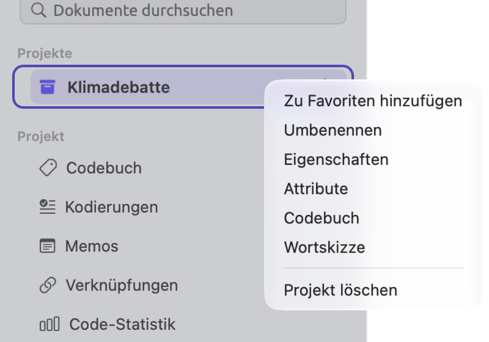
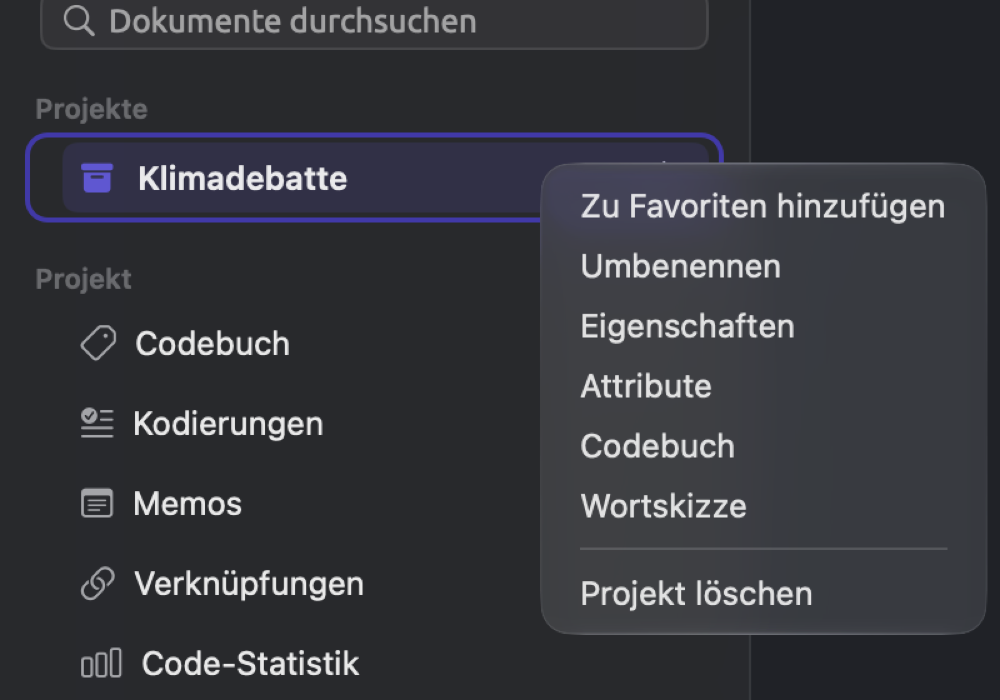
Die meisten Einträge im Menü Projekt der Menüleiste haben eines von zwei Zielen. Sie wirken entweder auf das aktive Projekt oder richten sich danach, was Sie in der Seitenleiste ausgewählt haben. So wirken Neues Set, Neues intelligentes Set und Attribute auf das aktive Projekt, während die Dokumentbefehle (nämlich Umbenennen, Eigenschaften, In Gruppe verschieben, Zu Set hinzufügen, Aus Set entfernen und Übersetzen) wie im Kontextmenü eines Dokuments auf die Dokumente wirken, die gerade in der Seitenleiste ausgewählt sind. Öffnen listet die zehn Ansichten des Projektregals. Intelligentes Set bearbeiten gilt für das intelligente Set im aktiven Tab.
Der Befehl zum Löschen (⌘⌫) wirkt auf das Element, das Sie zuletzt in der Seitenleiste angeklickt haben. Entsprechend lautet er Projekt löschen, Set löschen, Gruppe löschen oder Dokument löschen. Bevor LemmaLoom ein Projekt oder ein Dokument löscht, fragt es nach. Sets und Gruppen werden dagegen ohne Rückfrage entfernt. Mit Bearbeiten ▸ Widerrufen (⌘Z) holen Sie das Set oder die Gruppe anschließend zurück.
Projekteigenschaften
Den Dialog Projekteigenschaften öffnen Sie, indem Sie im Kontextmenü eines Projekts Eigenschaften wählen. Er hat dieselben Felder wie Neues Projekt und dient dazu, Namen, Farbe, Tags und Attribute eines Projekts zu ändern.
Die Schaltfläche Sichern bleibt deaktiviert, bis Name einen Eintrag hat. Farbe ändert die Farbe des Schachtelsymbols des Projekts in der Seitenleiste. Sie färbt auch die Hervorhebung hinter dem Symbol, wenn das Projekt das aktive ist. Bei einem Favoriten nimmt außerdem der Stern in der Liste Projekte diese Farbe an. Das Tags-Fenster zählt die Tags, die das Projekt kennzeichnen. Eine Abfrage über alle Projekte in Fenster ▸ Abfragen kann Projekte anhand dieser Tags finden. Unter Attribute steht eine Liste mit Namen und Typ jedes Attributs des Projekts. Jeder Eintrag hat am Ende eine Schaltfläche zum Entfernen (Attribut entfernen). Um ein Attribut anzulegen, klicken Sie auf Attribut hinzufügen.
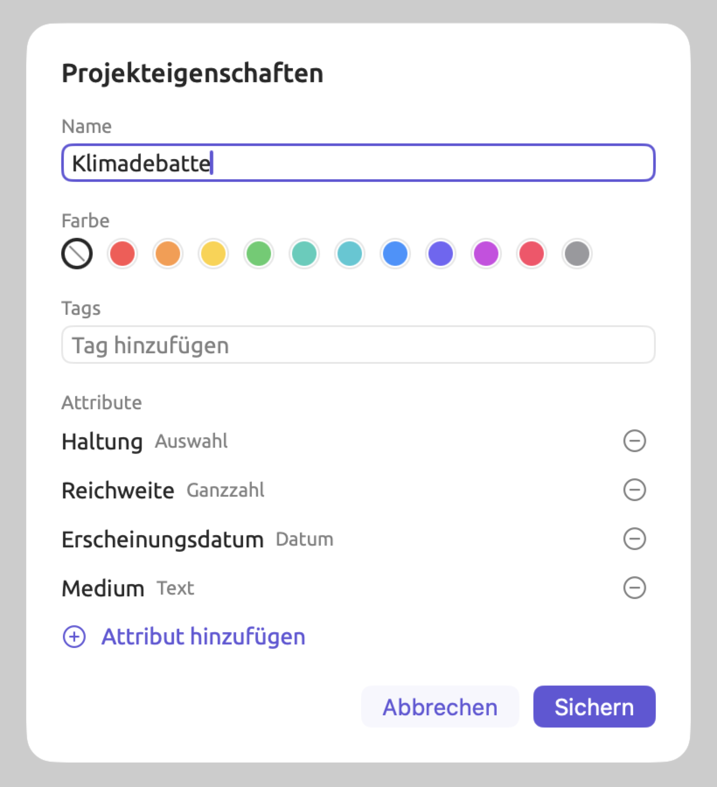
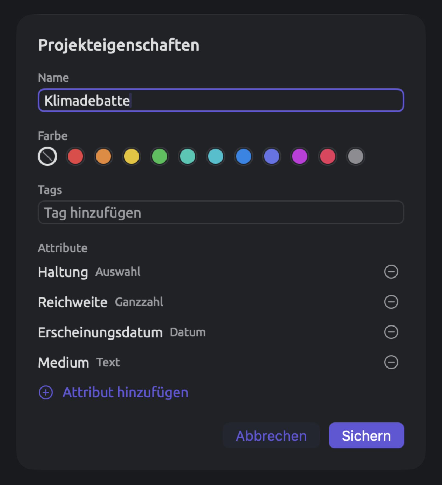
Sichern übernimmt alle Änderungen auf einmal in einem einzigen Schritt, den Bearbeiten ▸ Projekteigenschaften widerrufen (⌘Z) zurücknimmt.
Ein Projekt löschen
- Klicken Sie mit der rechten Maustaste auf das Projekt und wählen Sie Projekt löschen. Sie können auch auf das Projekt klicken und Projekt ▸ Projekt löschen (⌘⌫) wählen.
- Eine Warnung nennt das Projekt und weist darauf hin, dass alles darin gelöscht wird. Klicken Sie auf Löschen.
Zusammen mit dem Projekt werden alle seine Dokumente gelöscht. Auch ihre Mediendateien, Übersetzungen, Kodierungen, Memos, Verknüpfungen und Lesezeichen werden gelöscht, ebenso alles, was für das Projekt als Ganzes angelegt wurde. Dasselbe gilt für seine Codes und Code-Sets, Sets und Gruppen sowie Attribute und deren Werte. Auch die Wörterbücher und die im Projekt gesicherten Abfragen werden gelöscht. Wenn Sie das aktive Projekt löschen, wird das erste verbleibende Projekt der Liste aktiv.
Projektübergreifend arbeiten
Normalerweise ist alles innerhalb eines Projekts (Codes, Sets, Gruppen, Attribute, Wörterbücher und gesicherte Abfragen) von anderen Projekten getrennt. Ansichten betrachten in der Regel jeweils nur ein Projekt. Beispiele dafür sind Codebuch, Code-Statistik, Code-Matrix, Wortskizzen und Skizzenraum. Einige Funktionen reichen über alle Ihre Projekte hinweg. Mit ihnen können Sie Studien miteinander vergleichen oder bereits entwickelte Werkzeuge auf andere Studien anwenden.
Wenn Sie oben in Fenster ▸ Abfragen im Menü für den Geltungsbereich Alle Projekte wählen, fragen Sie die Originaldokumente aller Ihrer Projekte zugleich ab. Einzelheiten zu diesem Geltungsbereich finden Sie unter Das Abfragen-Fenster und Geltungsbereiche in Kapitel 15, Eine Abfrage erstellen. Nur hier kann eine Regel das Feld Projekt prüfen. Nur in diesem Geltungsbereich können Anzahl und Vergleichen ihre Ergebnisse nach Projekt gruppieren. Die Ergebnisliste erhält dann eine Spalte Projekt. Einige Vorlagen arbeiten ebenfalls in diesem Geltungsbereich, darunter Kodierungen nach Attribut, Rhetorik nach Gruppe und Dokumenttabelle.
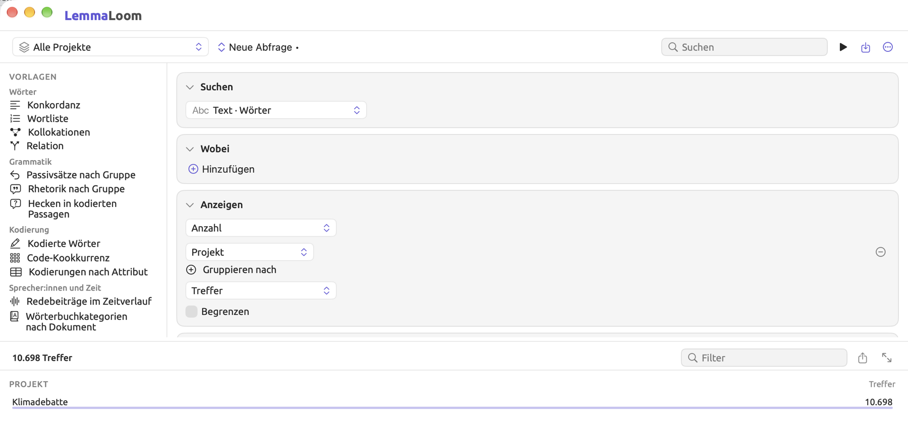
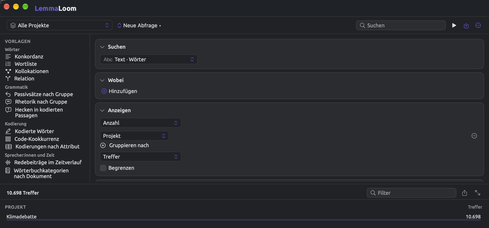
Wenn Sie beim Sichern einer Abfrage unter Verfügbar in die Option Alle Projekte wählen, steht die Abfrage in jedem Projekt zur Verfügung. Ist sie auf diese Weise als Lens gesichert, lässt sie sich in jedem Dokument aktivieren. Siehe Abfragen sichern in Kapitel 15, Eine Abfrage erstellen. Tags funktionieren ohnehin so; sie gelten für alle Projekte zugleich. Jedes Vorkommen eines Tags (etwa „Meinungsbeitrag“ in mehreren Projekten) ist dasselbe Tag. Tags lassen sich außer an einzelne Dokumente auch an Projekte vergeben. Eine Abfrage über alle Projekte kann daher Dokumente oder Projekte mit bestimmten Tags finden. Mehr zu Tags über alle Projekte hinweg finden Sie unter Eine Liste für alle Projekte in Kapitel 8, Sets, Gruppen, Tags und Attribute. Ebenfalls allen Projekten gemeinsam sind eigene Analysatoren (Kapitel 20, Eigene Analysatoren); was Sie unter Fenster ▸ Analysatoren schreiben, gehört zur ganzen Bibliothek und lässt sich auf Dokumente in jedem Projekt anwenden, und eine Abfrage über alle Projekte kann zählen, was ein solcher Analysator findet.
Wenn das Codebuch, die Code-Ansichten oder Wortskizzen mehrere Studien umfassen sollen, gehört das Material in ein einziges Projekt. Sets, Gruppen oder ein Attribut können die Studien dann unterscheiden.
Dokumente
Dokumente gelangen durch Import in ein Projekt. Kapitel 4, Material importieren behandelt jede Art von Material.
Dokumente in Tabs öffnen
Ein Klick auf ein Dokument in der Seitenleiste öffnet es in einem Tab direkt über der Leseansicht und macht diesen Tab aktiv. Das gilt auch für Dokumente, die unter einem Set stehen. Ist das Dokument bereits irgendwo in der Tableiste geöffnet, macht ein erneuter Klick in der Seitenleiste nur seinen vorhandenen Tab aktiv. Per Tastatur bewegen Sie sich mit dem Aufwärts- und dem Abwärtspfeil durch die Seitenleiste; der Zeilenschalter öffnet das ausgewählte Dokument.
Auch die Detailansichten des Projektregals, der Sets und der Tags öffnen sich in Tabs der Tableiste. Mehr dazu finden Sie weiter unten in diesem Kapitel unter Das Projektregal. Sobald mindestens ein Tab geöffnet ist, wird die Tableiste sichtbar, und Sie scrollen sie seitwärts, wenn mehr Tabs geöffnet sind, als in eine Reihe passen.
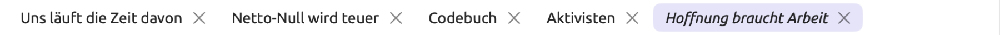
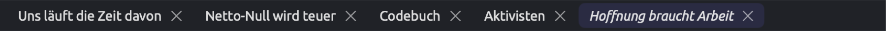
Um mit der Tastatur zwischen Tabs zu wechseln, wählen Sie Fenster ▸ Nächsten Tab anzeigen (⇧⌘]) oder Fenster ▸ Vorherigen Tab anzeigen (⇧⌘[). Auf den letzten Tab folgt wieder der erste. Ein Rechtsklick auf einen Tab zeigt im Kontextmenü In neuem Fenster öffnen, In geteilter Ansicht öffnen und Tab schließen.
Mit In neuem Fenster öffnen wandert das Dokument in das separate Dokumentfenster. Das Dokumentfenster enthält immer ein einziges Dokument; öffnen Sie ein zweites, ersetzt es das vorherige. Bei einem Set oder Tag steht In neuem Fenster öffnen nur für Tabs zur Verfügung, die Wortskizze oder Abfragen zeigen; bei einer Ansicht des Projektregals öffnet der Befehl das Codebuch-, Wortskizzen- oder Abfragen-Fenster. In geteilter Ansicht öffnen öffnet eine geteilte Ansicht mit Ihrem Dokument und dem gerade aktiven anderen Dokument nebeneinander. Die geteilte Ansicht ist in Kapitel 9, Übersetzungen und geteilte Ansicht beschrieben. In neuem Fenster öffnen und In geteilter Ansicht öffnen stehen auch im Menü Fenster zur Verfügung. Von dort aufgerufen, wirken die Befehle anders, nämlich auf den aktiven Tab. Außerdem listet In geteilter Ansicht öffnen dort die geöffneten Dokumente, die daneben erscheinen können.
Der Vorschau-Tab
Vorschau-Tabs haben kursive Titel und entstehen, wenn Sie ein Ergebnis aus einer Abfrage öffnen oder einen Beleg aus der Wortskizze eines Sets oder des Projekts anzeigen. Weitere Ergebnisse öffnen sich an derselben Stelle der Leiste und ersetzen das vorherige Ergebnis.
Um einen Vorschau-Tab zu behalten, klicken Sie auf den Tab oder wechseln mit Nächsten Tab anzeigen oder Vorherigen Tab anzeigen zu ihm. Der Titel erscheint dann wieder in normaler, aufrechter Schrift, und der Tab bleibt geöffnet wie jeder andere. Ein Klick auf das Dokument in der Seitenleiste hat dieselbe Wirkung. Ist das Dokument mit dem Ergebnis bereits in einem gewöhnlichen Tab geöffnet, zeigt LemmaLoom das Ergebnis in diesem Tab. Ist das Dokument in der geteilten Ansicht geöffnet, erhält der rechte Bereich den Fokus.
Tabs schließen
Ein Klick auf das × eines Tabs schließt den Tab. Alternativ schließt ⌘W (oder Ablage ▸ Tab schließen) den aktiven Tab. Danach wird der Tab aktiv, der nun ganz rechts steht.
Bei geöffneter geteilter Ansicht schließt ⌘W im rechten Bereich die geteilte Ansicht; an jeder anderen Stelle schließt ⌘W wie gewohnt den aktiven Tab. Wenn Sie in der geteilten Ansicht den letzten Tab im linken Bereich schließen, rückt das Dokument aus dem rechten Bereich an seine Stelle.
Solange ein Tab geöffnet ist, schließt Ablage ▸ Fenster schließen (⇧⌘W) das Hauptfenster. Ist im Fenster kein Tab geöffnet, sehen Sie statt Fenster schließen den Befehl Ablage ▸ Schließen (⌘W). Er schließt das Fenster und beendet LemmaLoom, wenn es das letzte LemmaLoom-Fenster war.
Mehrere Dokumente auswählen
Dokumente lassen sich gesammelt auswählen. Ein Befehl wirkt dann auf alle ausgewählten Dokumente zugleich.
Im Abschnitt Dokumente fügen Sie ein Dokument mit einem ⌘-Klick der Auswahl hinzu. Ein zweiter ⌘-Klick entfernt es wieder daraus. Ein ⇧-Klick wählt einen ganzen Bereich von Dokumenten aus, vom zuletzt angeklickten Dokument bis zu dem, auf das Sie jetzt klicken. Der Bereich folgt der Liste und schließt Dokumente in zugeklappten Gruppen sowie Übersetzungen unter ihren Originalen ein. Achten Sie deshalb vor dem Löschen auf die Anzahl der ausgewählten Dokumente oben im Kontextmenü.
Ein einfacher Klick auf ein Dokument wählt nur dieses eine Dokument aus und öffnet es. Im Abschnitt Sets wählen dieselben Klicks Dokumente unter einem Set aus.
Ein Rechtsklick auf eines der ausgewählten Dokumente öffnet das Kontextmenü. Oben steht die Anzahl der ausgewählten Dokumente, zum Beispiel 3 Dokumente ausgewählt. Sind genau zwei Dokumente ausgewählt, stellt der Befehl Nebeneinander öffnen das in der Liste weiter oben stehende in den Hauptbereich und das untere in die geteilte Ansicht. Unter In Gruppe verschieben wählen Sie zwischen Nicht gruppiert, jeder vorhandenen Gruppe und Neue Gruppe. Zu Set hinzufügen listet jedes Set, das Sie von Hand füllen, sowie Neues Set aus Dokumenten. Ein Set, das bereits alle ausgewählten Dokumente enthält, ist dort deaktiviert. Gehört eine Übersetzung zur Auswahl, wird ihr Original hinzugefügt. Exportieren sichert die ausgewählten Dokumente in einem LemmaLoom-Archiv (siehe Kapitel 22, Austausch und Export). Das Menü endet mit Dokumente löschen (siehe Dokumente löschen weiter unten in diesem Kapitel).


Das Kontextmenü eines Dokuments
Ein Rechtsklick auf ein einzelnes Dokument im Abschnitt Dokumente zeigt dieses Kontextmenü:
| Befehl | Wirkung |
|---|---|
| In geteilter Ansicht öffnen | Öffnet das Dokument neben dem aktiven. Deaktiviert, wenn kein anderes Dokument aktiv ist oder dieses bereits in der geteilten Ansicht steht. |
| Neben dem Original öffnen | Erscheint bei einer Übersetzung. Öffnet das Original links und die Übersetzung rechts. |
| Umbenennen | Macht den Namen zu einem Textfeld. |
| In Gruppe verschieben | Verschiebt das Dokument mit seinen Übersetzungen in eine Gruppe oder mit Nicht gruppiert aus jeder Gruppe heraus. |
| Sets | Fügt das Dokument einem Set hinzu oder bildet mit Neues Set aus Dokument ein neues Set daraus. |
| Eigenschaften | Öffnet die Dokumenteigenschaften (siehe Dokumenteigenschaften unten). |
| Übersetzen | Übersetzt das Dokument. Siehe Kapitel 9, Übersetzungen und geteilte Ansicht. |
| Exportieren | Sichert das Dokument in einem LemmaLoom-Archiv. |
| Indizierung wiederholen | Erscheint, wenn die Indizierung fehlgeschlagen ist, unter einer Zeile mit dem Grund. |
| Dokument löschen | Löscht das Dokument nach einer Rückfrage (siehe Dokumente löschen weiter unten in diesem Kapitel). |
Übersetzungen wandern immer mit ihren Originalen mit, wohin Sie diese auch verschieben. Verwenden Sie In Gruppe verschieben und Sets deshalb beim Originaldokument. Wenn Sie eine weitere Übersetzung des Dokuments brauchen, übersetzen Sie das Original noch einmal. Unter einem Set beginnt das Kontextmenü eines Dokuments mit Öffnen; in einem Set, das Sie von Hand füllen, endet es mit Aus Set entfernen.
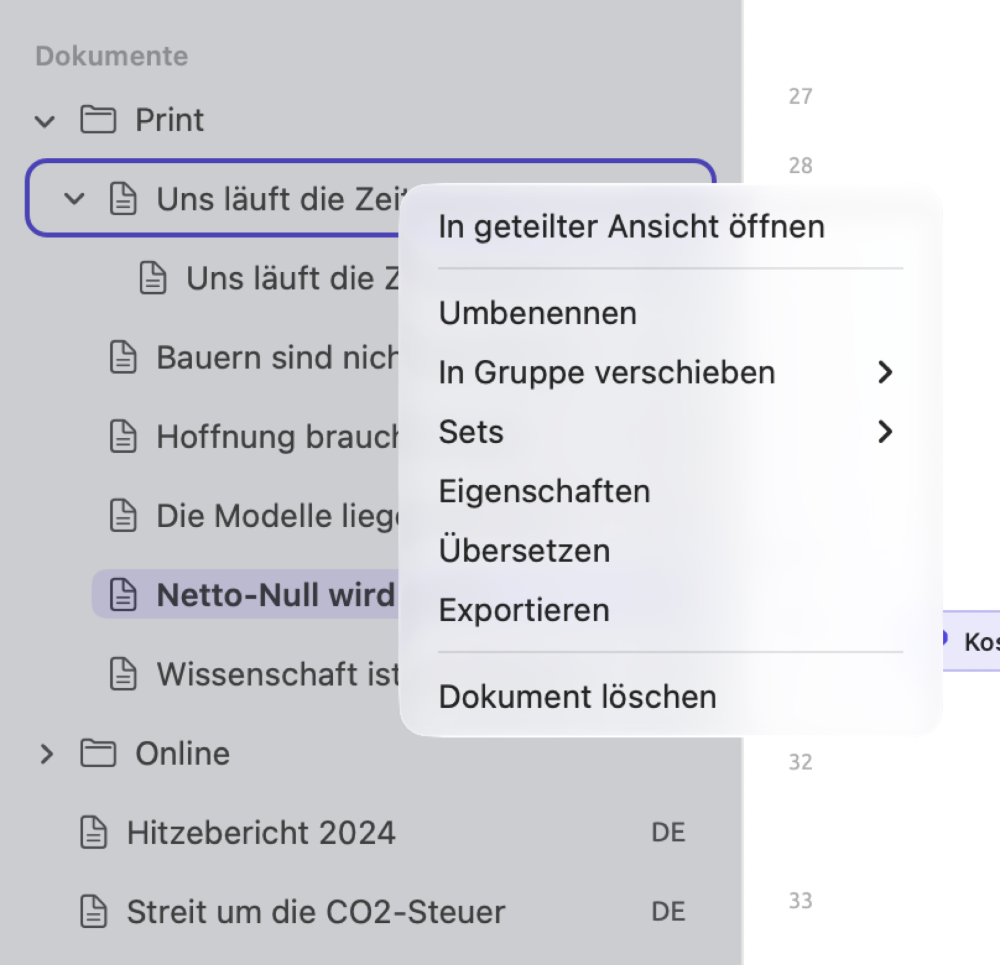
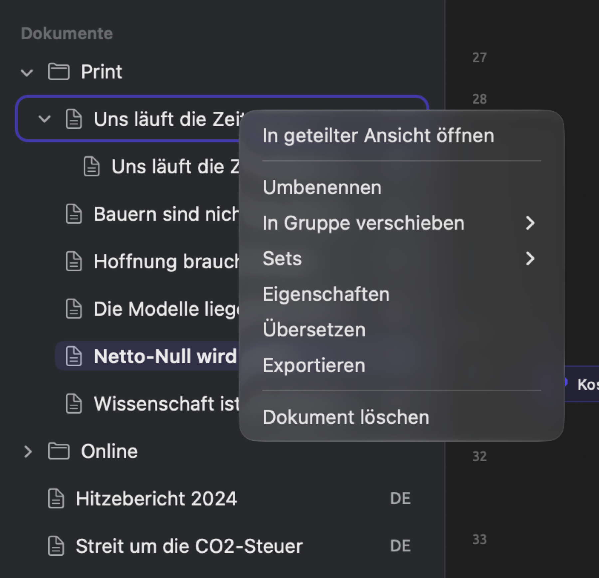
Ein Dokument umbenennen
- Klicken Sie mit der rechten Maustaste auf das Dokument und wählen Sie Umbenennen.
- Geben Sie den neuen Namen ein und drücken Sie den Zeilenschalter.
Mit der Esc-Taste stellen Sie den alten Namen wieder her. Ein Klick an eine andere Stelle übernimmt den neuen Namen. Bearbeiten ▸ Umbenennen widerrufen (⌘Z) stellt den alten Namen wieder her. Sie können das Dokument auch in den Dokumenteigenschaften umbenennen.
Dokumenteigenschaften
Alle Metadaten, die LemmaLoom außer dem Text selbst zu einem Dokument speichert, finden Sie in den Dokumenteigenschaften. So trägt „Uns läuft die Zeit davon“ aus „Klimadebatte“ das Datum vom 21. August 2024. Es hat das Tag „Meinungsbeitrag“. Mit seinen Werten für die vier Attribute des Projekts können Sie es einordnen und mit den übrigen Dokumenten des Projekts vergleichen.
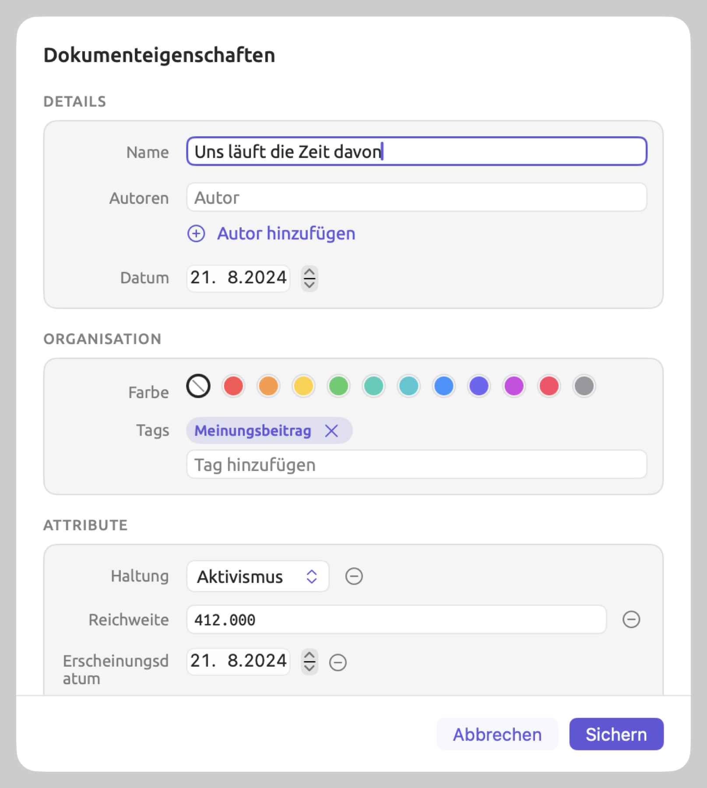
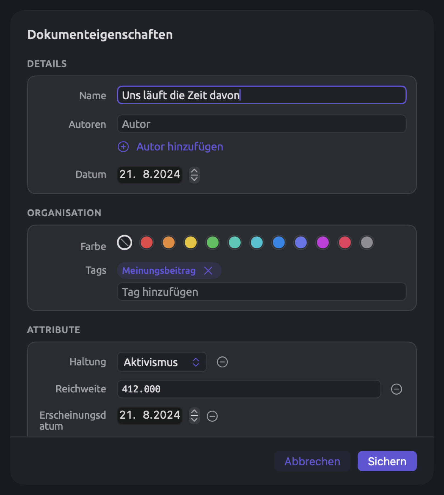
So ändern Sie die Eigenschaften eines Dokuments:
- Klicken Sie in der Seitenleiste mit der rechten Maustaste auf das Dokument und wählen Sie Eigenschaften.
- Nehmen Sie Ihre Änderungen unter Details, Organisation, Attribute, Zitation und Indizierung vor.
- Klicken Sie auf Sichern.
Sichern übernimmt Ihre Änderungen als eine einzige Aktion. Bearbeiten ▸ Dokumenteigenschaften widerrufen (⌘Z) nimmt sie alle zugleich zurück. Abbrechen verwirft alle Änderungen und schließt den Dialog.
Details
Name erscheint in der Seitenleiste, auf dem Tab des Dokuments und in den Ergebnissen jeder Analyse. Sichern ist erst verfügbar, wenn Name ausgefüllt ist.
Autoren enthält einen Autor pro Zeile. Autor hinzufügen fügt eine weitere Zeile für einen Autor hinzu. Gibt es mehrere Zeilen, hat jede eine Schaltfläche zum Entfernen (Autor entfernen). Leer gelassene Zeilen werden beim Sichern automatisch gelöscht.
Datum ist das Datum, an dem das Dokument aufgenommen, geschrieben oder veröffentlicht wurde.
Organisation
Farbe gibt Ihrem Dokument eine der elf verfügbaren Farben oder Keine Farbe. Mit intelligenten Sets und Abfragen können Sie Dokumente nach ihrer Farbe filtern. Die Farbe wirkt sich auf das Symbol des Dokuments in der Seitenleiste und auf die Hervorhebung seines Tabs aus.
Tags nimmt Tags einzeln auf. Sobald Sie ein Tag eingegeben haben, drücken Sie den Zeilenschalter oder tippen ein Komma dahinter, um es abzuschließen. Schon nach drei Zeichen schlägt LemmaLoom vorhandene Tags vor, die zu Ihrer Eingabe passen; Groß- und Kleinschreibung spielt dabei keine Rolle. Wenn Sie Viral eingeben, vergibt LemmaLoom automatisch das vorhandene Tag „viral“. Neben jedem Tag steht außerdem eine Schaltfläche ×, die das Tag entfernt.
Hat das Dokument Übersetzungen, teilt es seine Tags mit ihnen. Wenn Sie die Tags eines dieser Dokumente bearbeiten, ändern sich die Tags aller anderen mit.
Attribute
Dieser Bereich zeigt die Werte der Attribute dieses Dokuments, mit Bedienelementen, die vom Typ des Attributs abhängen. Ein Markierungsfeld steht für den Wert eines Attributs vom Typ Boolescher Wert, eine Datumsauswahl für Datum, ein Zahlenfeld für Ganzzahl und Dezimalzahl und ein Textfeld für Text. Attribute vom Typ Auswahl schließlich erscheinen als Menü ihrer Wahlmöglichkeiten, das auch Keine zulässt.
Um einen Wert für ein weiteres Attribut hinzuzufügen, gehen Sie so vor:
- Geben Sie den Namen des Attributs in das leere Feld unten ein. Während Sie tippen, erscheinen Vorschläge.
- Ist der Name im Projekt neu, wählen Sie seinen Typ. Bei einer Auswahl geben Sie außerdem die Wahlmöglichkeiten ein, eine pro Zeile.
- Klicken Sie auf Attribut hinzufügen oder drücken Sie den Zeilenschalter. Das Attribut erscheint in der Liste.
- Geben Sie den Wert ein.
Ein Attribut, das Sie in diesem Dialog anlegen, gehört zum ganzen Projekt, und zunächst hat kein anderes Dokument einen Wert dafür. Die Schaltfläche zum Entfernen (Attribut entfernen) neben einem Wert löscht den Wert dieses Attributs für dieses Dokument, ohne das Attribut selbst zu löschen.
Die Schaltfläche Attribut hinzufügen ist deaktiviert, wenn das Namensfeld leer ist, wenn das Attribut bereits in der Liste steht (Bereits hinzugefügt) oder wenn eine neue Auswahl keine Wahlmöglichkeiten hat (Keine Optionen). Bewegen Sie den Mauszeiger auf Attribut hinzufügen, um zu sehen, welcher Grund zutrifft.
Um einen Attributwert für mehrere Dokumente festzulegen, verwenden Sie das Attribute-Fenster. Es zeigt die Attributwerte aller Dokumente nebeneinander. Siehe Das Attribute-Fenster in Kapitel 8, Sets, Gruppen, Tags und Attribute.
Zitation
Zu den Zitationsangaben gehören die Felder Verlag, Publikation, URL und DOI, die festhalten, woher ein veröffentlichtes Dokument stammt. Publikation gibt an, wo das Dokument erschienen ist, etwa in einer Zeitschrift oder auf einer Website. Im mitgelieferten Projekt „Klimadebatte“ enthält das Feld URL von „Streit um die CO2-Steuer“ die Webadresse, von der das Dokument importiert wurde.
Die Dialoge Dokument importieren und Aus dem Web importieren haben dieselben Felder. Sie können sie also alle schon beim Import ausfüllen (mehr dazu in Kapitel 4, Material importieren).
Intelligente Sets und Abfragen können nach den Zitationsangaben sowie nach den Autoren und dem Datum filtern. Wenn Sie ein Projekt im REFI-QDA-Format exportieren, stehen alle Zitationsangaben in der Beschreibung des jeweiligen Dokuments. Programme, die REFI-QDA unterstützen, können diese Angaben in den Beschreibungen der exportierten Dokumente erkennen.
Indizierung
Bei einem Dokument, das ohne Indizierung importiert wurde, steht oben in diesem Bereich Indizierung ist aus. Dort finden Sie auch die Schaltfläche Jetzt indizieren, mit der Sie die Indizierung starten. Ob es überhaupt sinnvoll ist, die Indizierung ausgeschaltet zu lassen, erfahren Sie unter Ohne Indizierung importieren in Kapitel 21, Analyse und Indizierung.
Welche Grammatikanalyse ein Dokument erhält, hängt davon ab, was Sie unter Sprache wählen. Zur Wahl stehen Englisch, Deutsch und Chinesisch. Sie können auch Automatisch wählen; dann erkennt LemmaLoom die Sprache am Inhalt des Textes. Erkennt LemmaLoom zum Beispiel Französisch, erscheint diese Sprache neben den anderen Optionen im Menü. Wenn Sie eine geänderte Sprache sichern, wird das Dokument neu indiziert. Bei Automatisch zeigt das Menü danach die Sprache, die LemmaLoom erkannt hat. Ein Dokument in einer anderen Sprache können Sie trotzdem lesen und kodieren; sein Kennzeichen in der Seitenleiste zeigt dann Sprache wird für die Indizierung nicht unterstützt.
Analysatoren listet die Analysatoren auf, die Ihnen für ein Dokument in dieser Sprache zur Verfügung stehen. Das sind die eingebauten Analysatoren Kohäsion, Metadiskurs und Rhetorik sowie alle eigenen Analysatoren, die Sie für diese Sprache angelegt haben (siehe Kapitel 20, Eigene Analysatoren). Neben jedem Analysator steht sein Status, also Fertig, Veraltet, Nicht ausgeführt, Läuft oder Fehlgeschlagen. Ergebnisse sind Veraltet, wenn eine frühere Version des Analysators sie erzeugt hat oder wenn Sie das Dokument so bearbeitet haben, dass die vorhandenen Ergebnisse nicht mehr den ganzen Text abdecken. Bewegen Sie den Mauszeiger auf eine Zeile mit dem Status Fehlgeschlagen, um die Ursache zu erfahren.
Mit der Schaltfläche Ausführen aktualisieren Sie die Ergebnisse eines Analysators, die Veraltet sind oder noch gar nicht erzeugt wurden. Die Schaltfläche bleibt deaktiviert, bis das Dokument fertig indiziert ist. Die Schaltfläche mit dem Papierkorb (Ausgabe entfernen) entfernt alle Ergebnisse, die dieser Analysator für dieses Dokument erzeugt hat; bei späteren Indizierungen läuft der Analysator dann erst wieder, wenn Sie auf Ausführen klicken.
Ausführen, Ausgabe entfernen und Jetzt indizieren wirken sofort beim Klicken. Keine dieser Aktionen wartet auf Sichern.
Muster unter Von der Indizierung ausschließen halten bestimmten Text von der Grammatikanalyse fern. Beispiele für solchen Text sind Zeitstempel und Sprecherkennzeichnungen in Transkripten. Text, auf den ein Muster passt, bleibt in der Leseansicht sichtbar, und Sie können darin weiterhin Kodierungen anlegen.
Muster werden als reguläre Ausdrücke geschrieben, also in einer Schreibweise, die eine bestimmte Art von Text knapp beschreibt. Das Beispiel \[\d+:\d+\] steht für Zeitstempel wie [12:04]; dabei passt \d+ auf eine oder mehrere Ziffern, während \[ und \] auf die eckigen Klammern selbst passen. Das entspricht der Voreinstellung Zeitstempel [mm:ss].
Geben Sie ein Muster direkt in das Feld ein und klicken Sie auf Hinzufügen oder drücken Sie den Zeilenschalter. Voreinstellungen bietet fünf vordefinierte Muster, nämlich Zeitstempel [hh:mm:ss], Zeitstempel [mm:ss], Sprecherkennzeichnungen, Webadressen und E-Mail-Adressen. Darauf folgt die Liste der Muster, die Sie in den Einstellungen gesichert haben (siehe Kapitel 24, Einstellungen und Darstellung). Steht eine Voreinstellung bereits in der Liste, zeigt Voreinstellungen sie deaktiviert. Das Muster Sprecherkennzeichnungen erfasst nummerierte Kennzeichnungen mit dem englischen Wort Speaker, etwa Speaker 1:; für Sprecher mit Namen schreiben Sie ein eigenes Muster. Ein Beispiel wäre (Moderation|Aktivistin|Skeptiker):. Der senkrechte Strich trennt die Alternativen.
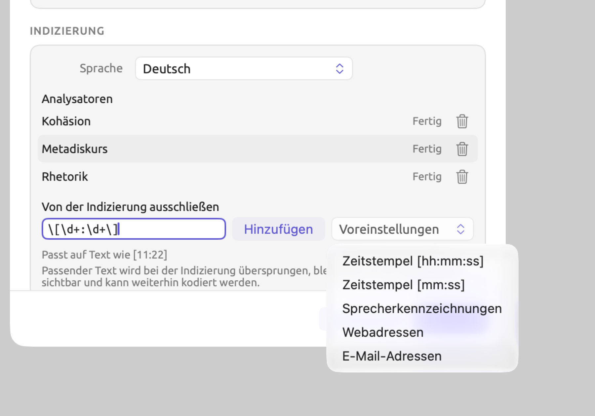
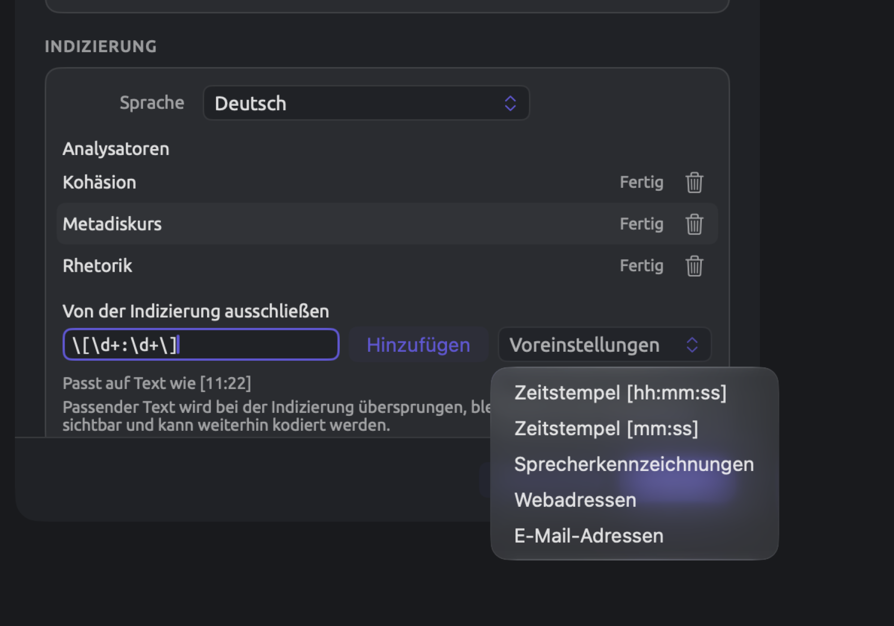
Unter jedem Muster, das Sie festlegen, steht ein passendes Beispiel in einer Zeile, die mit Passt auf Text wie beginnt. Kann LemmaLoom für ein gültiges Muster kein Beispiel bilden, steht darunter Gültiges Muster. Während Sie tippen, zeigt das Feld dieselbe Zeile darunter. Bei einem ungültigen Muster zeigt LemmaLoom darunter die Meldung Kein gültiges Muster, und Hinzufügen bleibt deaktiviert.
Jede Musterzeile endet mit einer Schaltfläche zum Entfernen (Muster entfernen). Ein Klick auf Sichern fügt auch ein gültiges Muster hinzu, das noch im Feld steht. Gesicherte Änderungen an den Mustern lösen eine erneute Indizierung des Dokuments aus.
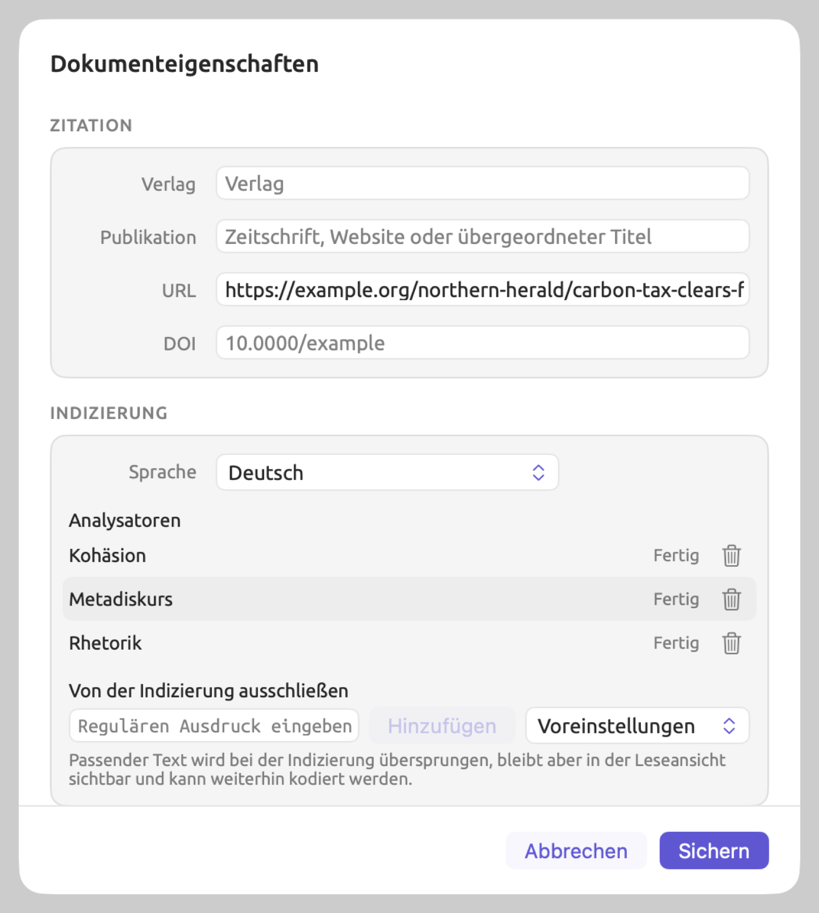
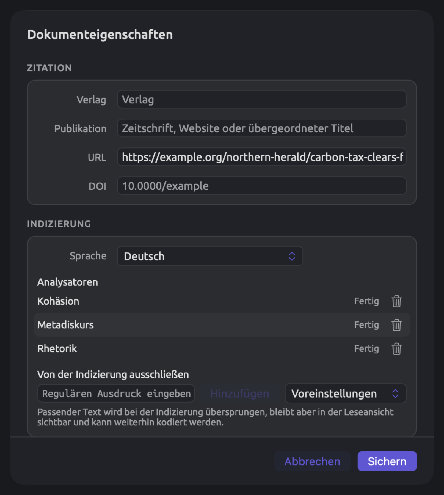
Die Quelldatei
LemmaLoom hält fest, woher Ihr Dokument stammt. Das kann der Name der Datei oder die Adresse der Webseite sein, aus der das Dokument kommt. Intelligente Sets und Abfragen bieten zwei Felder, die auf diesen Metadaten beruhen. Mit Quelldatei finden Sie zum Beispiel alle Dokumente, die Sie aus einer Datei importiert haben, deren Name bericht enthält. Das Format Ihres Dokuments kann Text, PDF, Webseiten, Audio oder Video sein. Stammt Ihr Dokument aus einer Audio- oder Videoaufnahme, richtet sich sein Format nach der Art der Aufnahme. Bei Dokumenten aus einem REFI-QDA-Projekt ist Quelldatei leer. Ihr Format ist Text, sofern sie keine Aufnahmen sind.
Dokumente löschen
- Klicken Sie mit der rechten Maustaste auf das Dokument und wählen Sie Dokument löschen. Um mehrere Dokumente zu löschen, wählen Sie diese zuerst aus (siehe Mehrere Dokumente auswählen weiter oben in diesem Kapitel) und wählen Sie dann Dokumente löschen. Sind die Dokumente in der Seitenleiste unter Dokumente ausgewählt, bewirkt Projekt ▸ Dokument löschen oder Dokumente löschen (⌘⌫) dasselbe.
- Eine Warnung nennt das Dokument oder die Anzahl der Dokumente und weist darauf hin, dass alles darin gelöscht wird. Klicken Sie auf Löschen.
Beim Löschen eines Dokuments werden sein Text, seine Mediendatei und seine Grammatikanalyse entfernt. Auch seine Kodierungen, Memos, Verknüpfungen, Lesezeichen und Attributwerte werden entfernt. Codes, deren Geltungsbereich das Dokument ist, werden mit ihm entfernt. Siehe Wo ein Code verwendet werden kann in Kapitel 7, Kodieren. Aus allen Sets, die das Dokument enthielten, wird es ebenfalls entfernt. Abfragen, die nur für dieses Dokument gesichert waren, werden zu Abfragen des Projekts. Wenn Sie ein Original löschen, werden auch seine Übersetzungen gelöscht. Löschen Sie nur eine Übersetzung, gehen Codes, deren Geltungsbereich die Übersetzung ist, auf das Original über. Haben Sie ein Dokument versehentlich gelöscht, holen Sie es mit Bearbeiten ▸ Dokument löschen widerrufen (⌘Z) zurück, oder mit Bearbeiten ▸ Dokumente löschen widerrufen, wenn Sie mehrere Dokumente auf einmal gelöscht haben. Alles oben Genannte kehrt mit dem Dokument zurück, und die Indizierung läuft im Hintergrund. Der Widerrufverlauf besteht, bis Sie LemmaLoom beenden. Mehr zum Widerrufverlauf und zu weiteren widerrufbaren Aktionen finden Sie in Kapitel 23, Widerrufen und Wiederholen.
Gruppen
Gruppen sind Behälter, in denen Sie Dokumente ordnen. Jedes Dokument kann nur in einer Gruppe liegen, und Übersetzungen liegen immer in derselben Gruppe wie ihr Original. „Klimadebatte“ hat zwei Gruppen namens „Print“ und „Online“; sie ordnen die Dokumente danach, ob sie gedruckt oder online erschienen sind. Diese Gruppen dienen der Übersicht in der Liste. Die Vergleiche in „Klimadebatte“ beruhen auf dem Attribut „Haltung“ und auf Sets.
Dokumente listet die Gruppen in der Reihenfolge, in der sie angelegt wurden. Dokumente ohne Gruppe folgen unter allen Gruppen. Bei jedem Start von LemmaLoom sind alle Gruppen zugeklappt; mit einem Klick auf ihr Dreiecksymbol klappen Sie sie auf.
So legen Sie eine Gruppe an:
- Wählen Sie Ablage ▸ Neue Gruppe (⌥⌘N). Eine Gruppe namens Neue Gruppe erscheint, und ihr Name ist ausgewählt.
- Geben Sie einen Namen ein und drücken Sie den Zeilenschalter.
Wenn Sie zwei oder mehr Dokumente ausgewählt haben, klicken Sie mit der rechten Maustaste auf eines davon und wählen In Gruppe verschieben ▸ Neue Gruppe. Alle diese Dokumente kommen in die neue Gruppe, die bereits aufgeklappt ist. Sie können der Gruppe sofort einen Namen geben. Projekt ▸ In Gruppe verschieben ▸ Neue Gruppe macht dasselbe mit einem einzelnen ausgewählten Dokument.
Um ein einzelnes Dokument zu verschieben, klicken Sie mit der rechten Maustaste darauf und wählen unter In Gruppe verschieben die gewünschte Gruppe. Gehört das Dokument bereits zu einer Gruppe, ist diese Option deaktiviert. Mit Nicht gruppiert kommt das Dokument zu den anderen Dokumenten ohne Gruppe. In seiner neuen Gruppe steht ein verschobenes Dokument an letzter Stelle. Wenn Sie ein Dokument über den Dialog Dokument importieren importieren, können Sie die Gruppe angeben, in die es kommen soll.
Das Kontextmenü einer Gruppe bietet Umbenennen und Gruppe löschen. Sie können auch auf die Gruppe klicken und Projekt ▸ Gruppe löschen (⌘⌫) wählen. Wenn Sie eine Gruppe löschen, verlassen ihre Dokumente die Gruppe und stehen bei den anderen Dokumenten ohne Gruppe. Bedingungen intelligenter Sets, die die gelöschte Gruppe nannten, verlieren sie; eine Bedingung wie Gruppe ist eines von „Print“ steht danach ohne Auswahl da, und eine solche Bedingung trifft auf kein Dokument zu. Ein solches intelligentes Set müssen Sie danach bearbeiten. Bearbeiten ▸ Widerrufen (⌘Z) macht frühere Änderungen an Gruppen rückgängig, auch das Löschen.
Sets und Tags in der Seitenleiste
Jedes Set unter Sets zeigt daneben die Zahl seiner Dokumente. Ein Set, das Sie von Hand füllen, hat ein Stapelsymbol. Ein intelligentes Set hat stattdessen ein Filtersymbol. Ein Klick auf das Dreiecksymbol neben einem Set zeigt die Liste seiner Dokumente, und ein Klick auf ein Dokument in dieser Liste öffnet es. Um ein Set in einem eigenen Tab zu öffnen, klicken Sie auf seinen Namen (siehe Das Projektregal unten). Neues Set legt ein leeres Set an, dessen Name in einem aktiven Textfeld steht. Neues intelligentes Set öffnet dagegen den Editor für die Bedingungen eines neuen intelligenten Sets. Jedes Set hat ein Kontextmenü mit Set öffnen, Wortskizze, Umbenennen, Bearbeiten (nur bei intelligenten Sets), Exportieren und Set löschen. Mehr zu Sets finden Sie in Kapitel 8, Sets, Gruppen, Tags und Attribute. Ein Rechtsklick auf ein Dokument in einem Set, das Sie von Hand füllen, zeigt Aus Set entfernen. Haben Sie unter diesem Set mehrere Dokumente ausgewählt, werden sie alle entfernt.
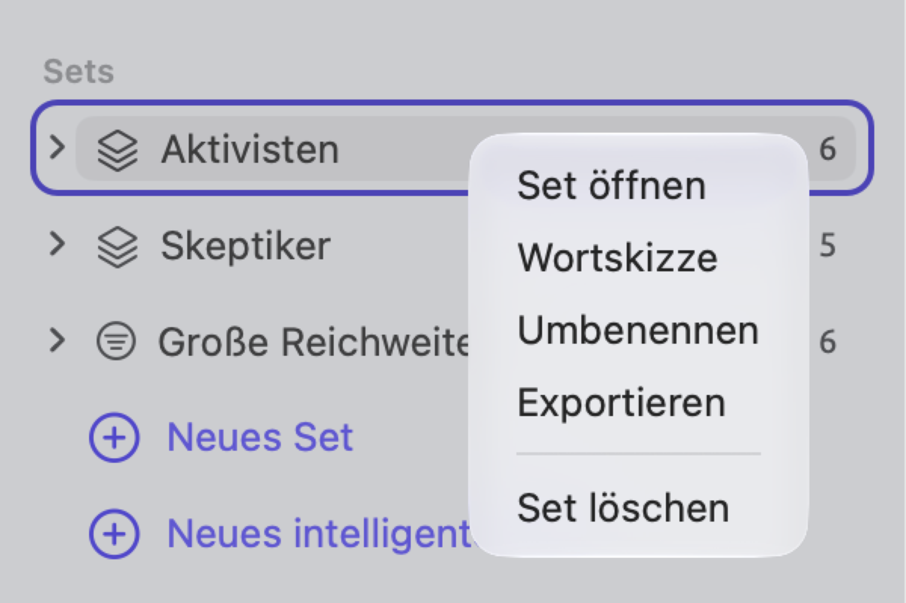
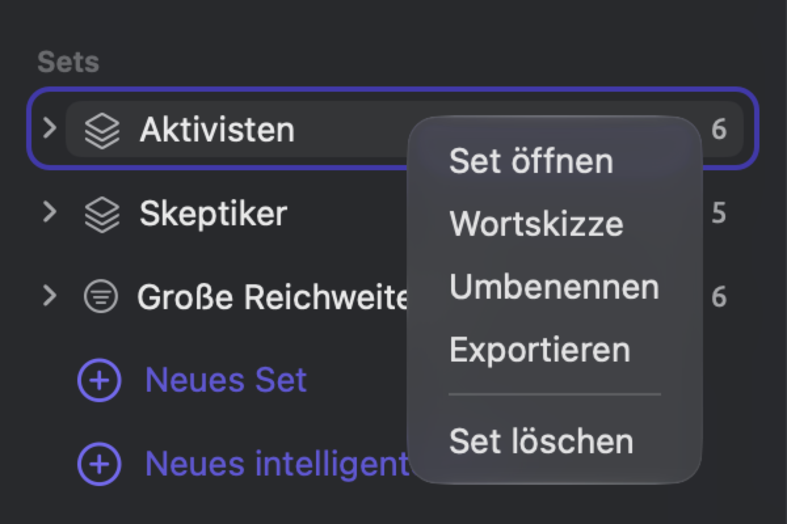
Übersetzungen gehören zu denselben Sets wie ihre Originale. In Sets steht nur das Originaldokument. Wenn Sie eine Übersetzung einem Set hinzufügen, wird ihr Original hinzugefügt.
Tags stehen unter Tags. Ein Klick auf ein Tag öffnet einen Tab mit denselben zehn Ansichten wie bei einem Set, die die Dokumente des Tags erfassen. Im Kontextmenü jedes Tags steht Wortskizze für eine Wortskizze seiner Dokumente bereit. Außerdem gibt es Umbenennen und Tag löschen, die wie im Tags-Fenster weiter unten wirken; beide ändern das Tag global, in allen Projekten.
Das Tags-Fenster
Unter Fenster ▸ Tags sehen Sie die Liste der Tags, die alle Ihre Projekte gemeinsam nutzen, zusammen mit der Häufigkeit jedes Tags. Im Projekt „Klimadebatte“ tragen zum Beispiel drei Dokumente das Tag „Meinungsbeitrag“, nämlich „Uns läuft die Zeit davon“, „Netto-Null wird teuer“ und „Wer bezahlt die Wende“. Zwei Dokumente tragen das Tag „viral“, nämlich „Brief vom Klimastreik“ und „Keine Panik“. In diesem Fenster können Sie Tags außerdem umbenennen, zusammenführen und löschen.
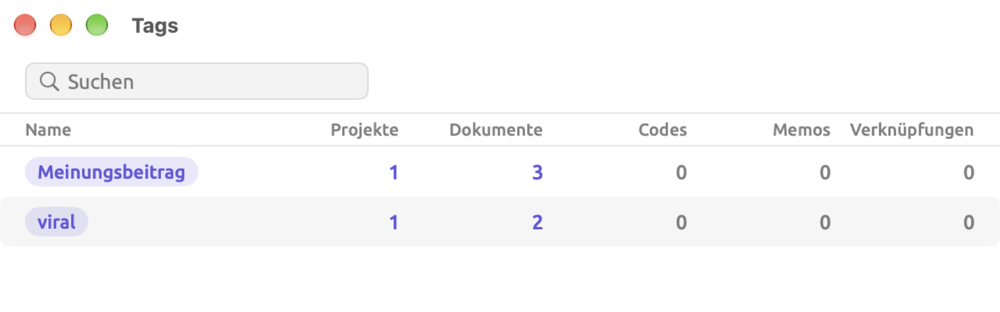
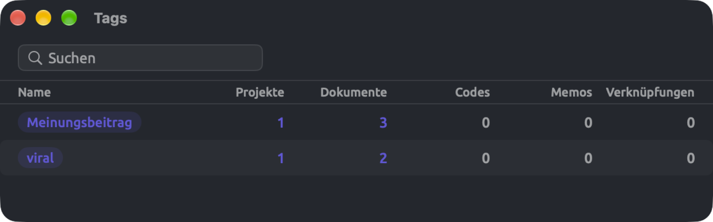
Das Tags-Fenster zeigt neben jedem Tag fünf Zahlen in den Spalten Projekte, Dokumente, Codes, Memos und Verknüpfungen. Die erste Zahl erfasst jedes Projekt, das das Tag verwendet, sei es am Projekt selbst (in Neues Projekt oder in den Projekteigenschaften) oder an einem seiner Dokumente, Codes, Memos oder Verknüpfungen. Die übrigen vier Zahlen beziehen sich auf das aktive Projekt, sodass jede Zahl dem Ergebnis entspricht, das ein Klick darauf zeigt. Auch ein Tag, das ausschließlich in anderen Projekten vorkommt, steht in der Tabelle; seine Zahlen unter Dokumente, Codes, Memos und Verknüpfungen sind 0. Die Zahl unter Dokumente gibt an, wie viele Dokumente das Tag tragen; ein Original und seine Übersetzungen werden dabei nur einmal gezählt, da sie dieselben Tags tragen. Um Tags zu filtern, geben Sie einen Teil eines Namens in Suchen ein. Bei Tags spielt Groß- und Kleinschreibung keine Rolle; „viral“ gilt als identisch mit „Viral“, und angezeigt wird die häufigere Schreibweise.
Ein Klick wählt ein Tag aus; mit einem Doppelklick oder dem Zeilenschalter öffnen Sie es in einem Tab des Hauptfensters. Ein Klick auf ein Tag unter Tags in der Seitenleiste bewirkt genau dasselbe. Jede Zahl über null lässt sich anklicken. Eine Zahl unter Dokumente öffnet die Dokumente des Tags in einem neuen Tab, wie ein Doppelklick auf die Zeile. Eine Zahl unter Codes filtert das Codebuch des aktiven Projekts auf das, was das Tag trägt; ebenso filtern Zahlen unter Memos und Verknüpfungen die Ansichten Memos und Verknüpfungen. Das × am Tag oben in der Ansicht (Filter entfernen) zeigt wieder alle Einträge. Eine Zahl unter Projekte zeigt eine Liste der Projekte, die das Tag verwenden; wenn Sie eines davon wählen, wird es zum aktiven Projekt.
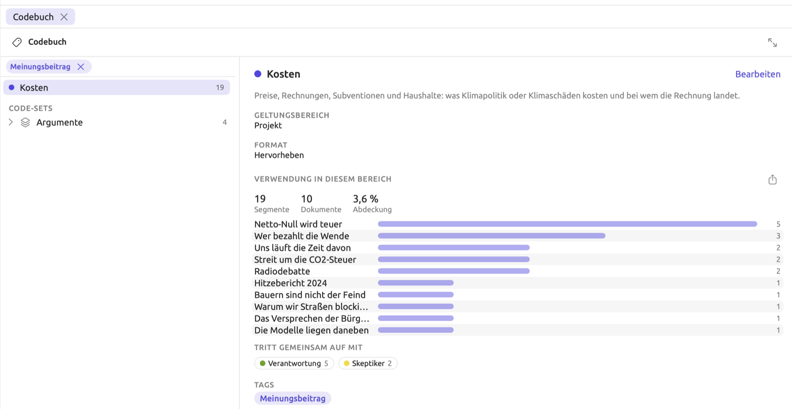
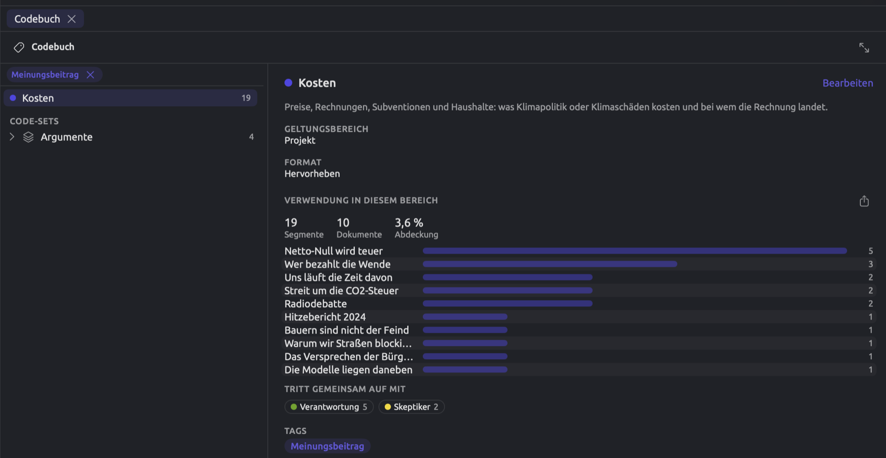
So benennen Sie ein Tag um:
- Klicken Sie mit der rechten Maustaste auf das Tag und wählen Sie Umbenennen.
- Geben Sie den neuen Namen ein und drücken Sie den Zeilenschalter. Mit der Esc-Taste brechen Sie ab.
Der neue Name gilt für jedes Projekt, jedes Dokument, jeden Code, jedes Memo und jede Verknüpfung, die das Tag tragen. Alle Bedingungen intelligenter Sets und alle Regeln in Abfragen, die das Tag nennen, werden entsprechend angepasst. Ist das Tag in einem Tab geöffnet, übernimmt der Tab den neuen Namen. Geben Sie einem Tag den Namen eines anderen Tags, werden beide unter dem Namen des letzteren zusammengeführt.
Wenn Sie im Kontextmenü eines Tags Löschen wählen, wird das Tag gelöscht. Jedes Vorkommen des Tags wird in allen Projekten von allem entfernt, was es trägt. Jeder Tab im Hauptfenster, der das Tag zeigt, wird automatisch geschlossen.
Bearbeiten ▸ Tag umbenennen widerrufen (oder Bearbeiten ▸ Tag löschen widerrufen, ⌘Z) nimmt Ihre letzte Umbenennung oder Löschung zurück. Der Befehl steht zur Verfügung, solange das Tags-Fenster aktiv ist.
Das Projektregal
Über das Projektregal arbeiten Sie mit dem gesamten Projekt. Im Abschnitt Projekt der Seitenleiste stehen zehn Detailansichten, die jeweils alle Dokumente des aktiven Projekts erfassen. Ein Klick öffnet eine Ansicht in einem Tab neben Ihren Dokumenten; der Tab trägt den Namen der Ansicht (etwa Code-Statistik).
Möchten Sie nur einen bestimmten Teil Ihres Projekts betrachten, öffnen Sie ein Set oder ein Tag Ihrer Wahl. Dann öffnen sich dieselben zehn Detailansichten, beschränkt auf die Dokumente dieses Teils. Im Projekt „Klimadebatte“ zeigt das Set „Aktivisten“ diese zehn Ansichten nur für seine sechs Texte von Aktivisten. Tabs für solche Teilmengen zeigen den Namen der Teilmenge und die Zahl ihrer Dokumente. Der Tab hat außerdem eine Reihe von Schaltflächen, eine für jede Ansicht. Zu Beginn zeigt er die Ansicht Codebuch; ein Klick auf eine andere Schaltfläche wechselt zu dieser Ansicht. Ist das Fenster zu schmal, tritt ein Menü an die Stelle der Schaltflächen.
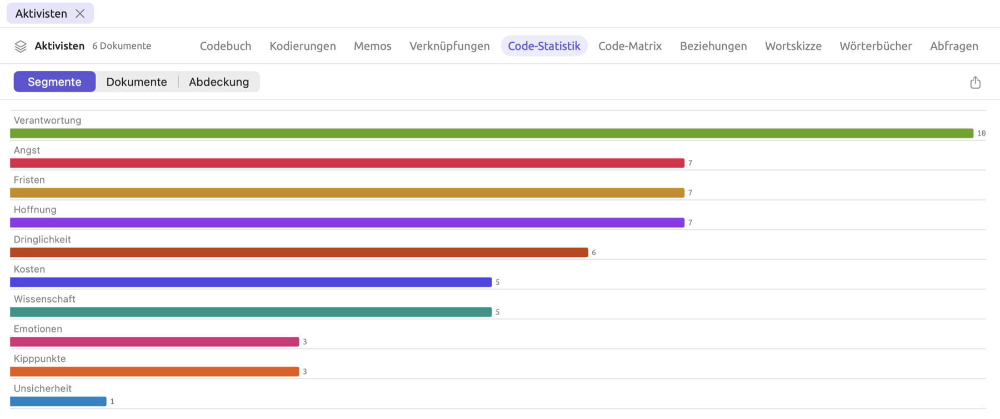
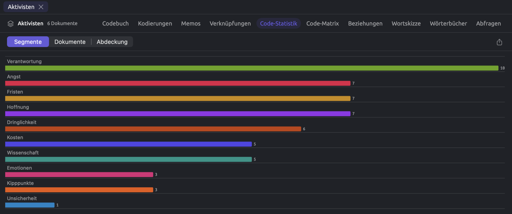
| Ansicht | Was sie zeigt | Beschrieben in |
|---|---|---|
| Codebuch | Den Codebaum mit der Zahl der Segmente jedes Codes. Für den ausgewählten Code seine Beschreibung, seine Segmente, Dokumente und Abdeckung im Geltungsbereich, die Dokumente, die ihn verwenden, und die Codes, mit denen er gemeinsam vorkommt. | Kapitel 7, Kodieren |
| Kodierungen | Jedes kodierte Segment im Geltungsbereich mit seinem Code und Dokument. Sie können die Liste durchsuchen und filtern und ein Segment in seinem Dokument öffnen. | Kapitel 13, Codes auswerten |
| Memos | Die Memos im Geltungsbereich mit dem Dokument und dem Code, zu dem jedes gehört. | Kapitel 7, Kodieren |
| Verknüpfungen | Die Verknüpfungen zwischen Textstellen im Geltungsbereich mit ihren beiden Enden. | Kapitel 7, Kodieren |
| Code-Statistik | Wie oft jeder Code vergeben ist und wie viel Text er abdeckt, aufgeschlüsselt nach Attributen. | Kapitel 13, Codes auswerten |
| Code-Matrix | Eine Tabelle, die zeigt, wie oft jeder Code in jedem Dokument vergeben ist, mit einer Zeile für jeden Code. Spalten gruppieren nach fasst die Dokumente nach einem Attribut, nach Gruppe, Sprache oder Format zusammen. | Kapitel 13, Codes auswerten |
| Beziehungen | Eine Tabelle, die zeigt, wie oft sich Codes in denselben Textstellen überschneiden. | Kapitel 13, Codes auswerten |
| Wortskizze | Für ein Wort Ihrer Wahl die Wörter, mit denen es sich verbindet, nach grammatischer Relation geordnet, im ganzen Geltungsbereich. | Kapitel 12, Wortskizze |
| Wörterbücher | Die Wörterbücher des Projekts und wie oft die Begriffe jeder Kategorie im Geltungsbereich vorkommen. | Kapitel 19, Wörterbücher |
| Abfragen | Den Abfrageeditor, der die Dokumente im Geltungsbereich durchsucht. | Kapitel 15, Eine Abfrage erstellen |
Um eine Ansicht in einem eigenen Fenster neben der Leseansicht zu öffnen, verwenden Sie In einem Fenster öffnen. Diese Schaltfläche zeigt zwei diagonale Pfeile und sitzt am rechten Ende der Leiste über der Ansicht. Wortskizze öffnet sich im Wortskizzen-Fenster, Abfragen im Abfragen-Fenster. Die übrigen acht Ansichten öffnen sich im Codebuch-Fenster, das oben nebeneinander Schaltflächen für alle zehn Ansichten hat. Aus einem Tab für ein Set oder Tag öffnen sich nur Wortskizze und Abfragen in ihren eigenen Fenstern. Dazu verwenden Sie die Schaltfläche, oder Sie klicken mit der rechten Maustaste auf den Tab selbst und wählen In neuem Fenster öffnen. Das Codebuch-Fenster öffnen Sie auch mit dem Menübefehl Fenster ▸ Codebuch oder mit einem Rechtsklick auf das Projekt und Codebuch.
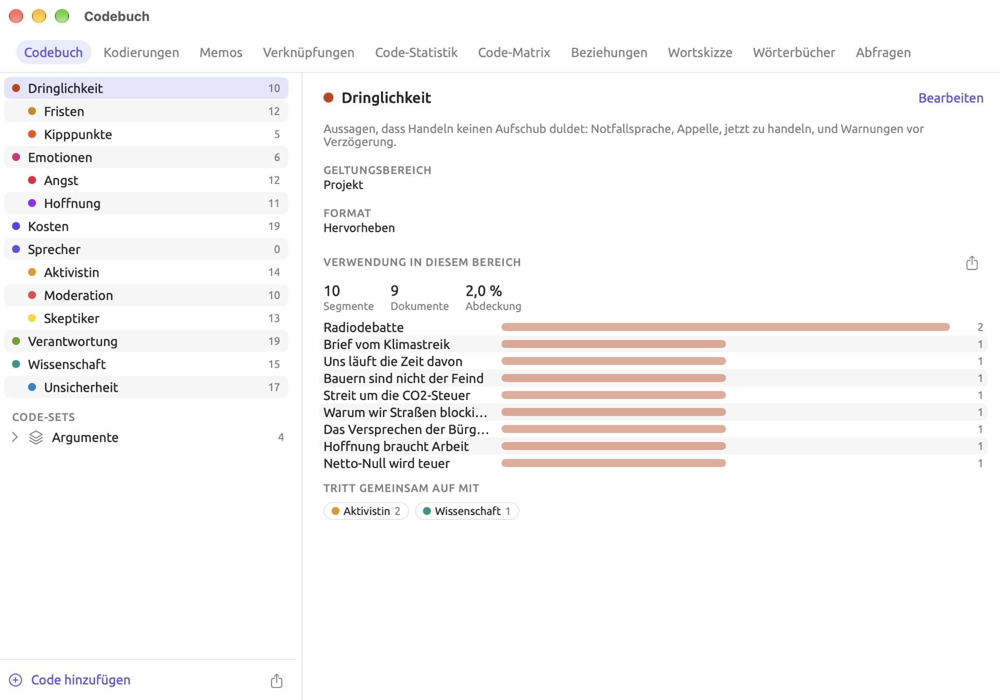